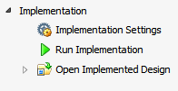

Implemented Design 環境では、合成後のネットリスト ファイル、インプリメンテーションからの配置配線データ、ターゲット パーツのデバイス リソースをリンクして、インメモリでインプリメント済みデザインを作成します。
このデザイン環境は、インプリメント済みデザインを既に開いた状態で Flow Navigator の [Implementation] をクリックするとアクティベートできます。
|
Implemented Design 環境からは、次が実行できます。
|
 |
関連項目
 |
Vivado® デザイン ハブ - インプリメンテーション |
 |
Vivado Design Suite QuickTake ビデオ : デザインのインプリメンテーション |